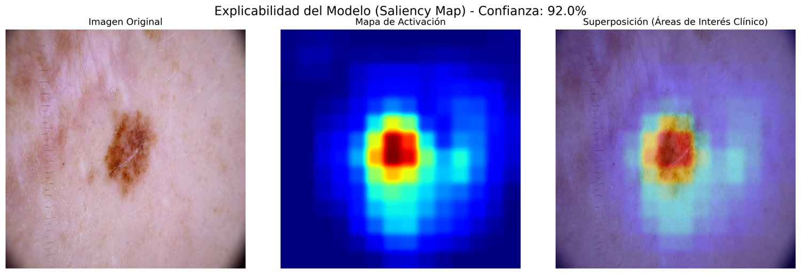

Computer vision · Edge AI · 2026
Portable AI dermatoscope
A 3D-printed, cross-polarized dermatoscope built on a Raspberry Pi 5 and Camera Module 3 that classifies skin lesions at the point of care. I led the device design and software.
- EfficientNetB0 with transfer learning (HAM10000), converted to TensorFlow Lite FP16: about 50 ms per image on the board.
- Lesion segmentation designed to work on darker skin tones (adaptive YCbCr, blue channel + Otsu).
- Saliency maps so clinicians can see what the model looked at (shown above, public dataset image).
- Oral presentation at ICBHI–CLASD 2026; paper in press (Springer IFMBE Proceedings).
Raspberry Pi 5TFLiteTensorFlowOpenCV3D printing
Code on GitHub →